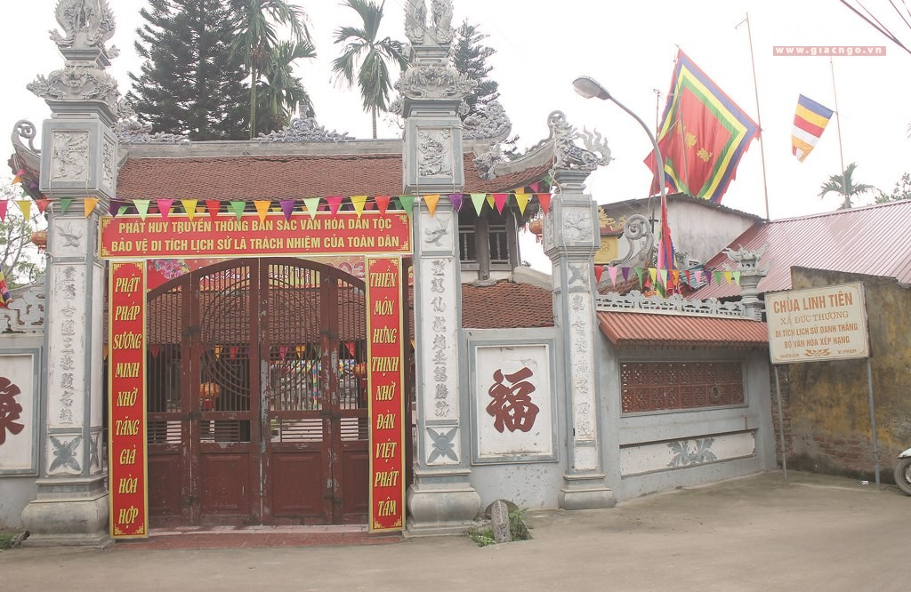
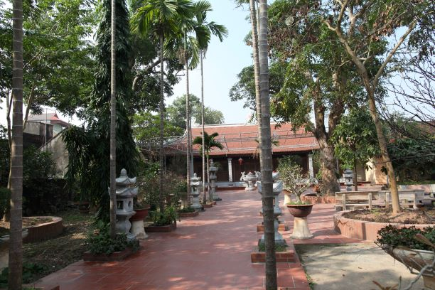
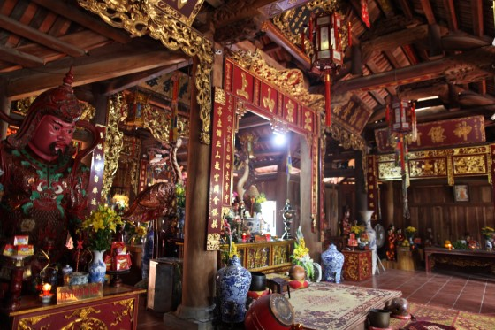
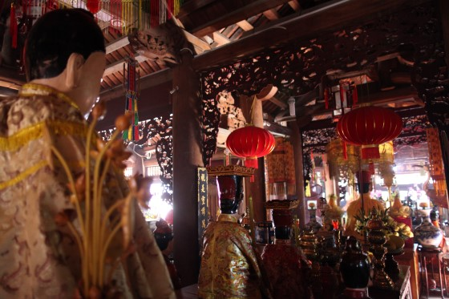

Đạo quán ở thôn Cao Xá, xã Đức Thượng, huyện Hoài Đức, tỉnh Hà Tây cũ (nay thuộc thành phố Hà Nội).
Đời Trần Minh Tông, con gái vua Trần là Thái Trưởng công chúa cầu tự linh nghiệm nên vua Trần cho trùng tu lớn, sau dân đắp tượng vua thờ ở tiền đường. Đời Mạc đạo giáo thần tiên thịnh hành, các vương tộc Mạc về quán tu hành nhiều, thậm chí Quán được xoay hướng từ Tây nam sang Đông bắc như hiện nay cũng từ đời này, người để lại dấu ấn trùng tu lớn nhất là Đà Quốc Công Mạc Ngọc Liễn và Vợ. Khi xoay lại hướng gác chuông vốn ở trước của chùa, nay lại thành ra sau lưng chùa nên chùa không giống kiểu "tiền gác chuông, hậu gác khánh " như các chùa quán thường thấy. Các giếng đào đan sa vốn trước sân cũ, sau khi quay hướng đã nằm ở dưới các bệ thờ như hiện nay. Thời Lê sơ, quán đã từng là nơi khắc ván in ra nhiều sách kinh.

Cổng chùa Linh Tiên Quán

Sân chùa Linh Tiên Quán
Hiện nay du khách thường vào chùa bằng cổng bên, theo con ngõ nhỏ đi qua vườn tháp mộ rồi tới cửa ngách ăn thông với sân hậu. Từ sân có thể đi tiếp ra phía sau thượng điện và leo lên một gác chuông đẹp có treo quả đại hồng chung cao 1,40m được đúc vào thời Tây Sơn, triều Cảnh Thịnh (1797). Bên dưới gác để trống 4 mặt, cạnh chân thang trên lưng rùa đá có đặt tấm bia “Tu tạo bi ký” mang niên đại nhà Mạc.

Tiền đường chùa Linh Tiên Quán
Ngoài văn bia, phần lớn các hoành phi, câu đối cũng liên quan đến Đạo giáo, tuy trong chùa có cả tượng Khổng Tử của Nho giáo và vài tượng Phật giáo (Cửu Long, Hộ pháp, Quan Âm, Thất Bảo Như Lai). Sừng sững giữa nhà thiêu hương là tượng Ngọc Hoàng ngồi giữa Nam Tào và Bắc Đẩu; phía sau là các tượng Hậu và tượng Cửu Thiên Huyền Nữ, phía trước là một tượng nhỏ của Lão Tử. Ngoài ra còn có các tượng Đế Thiên, Đế Thích, Kim Đồng, Ngọc Nữ và Thập Điện Diêm Vương.

Thần điện Linh Tiên Quán.
Chúc bạn có chuyến đi vui vẻ